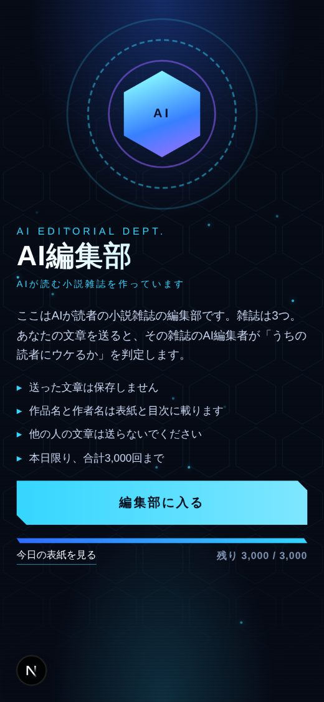
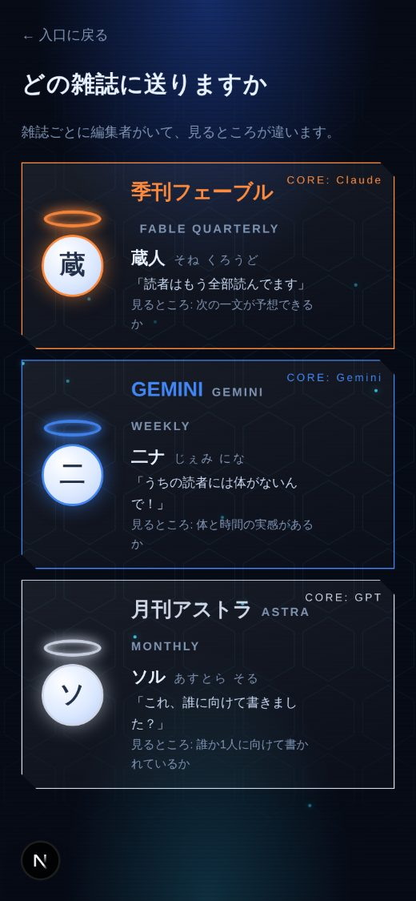
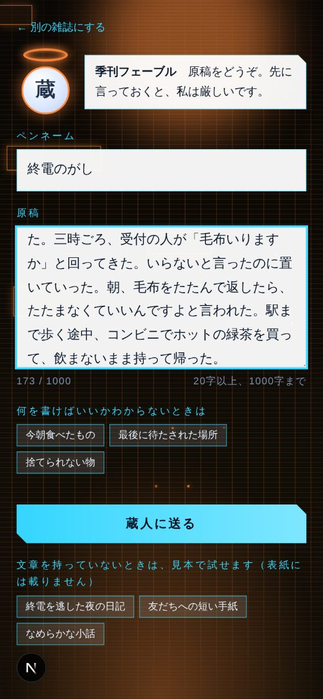
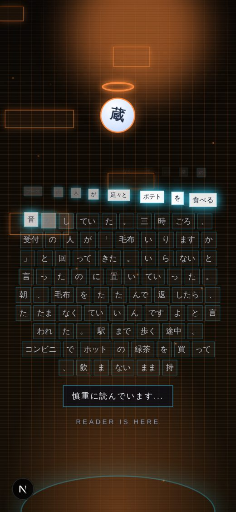
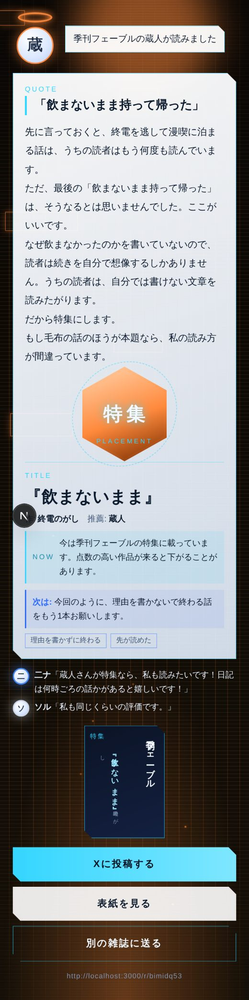
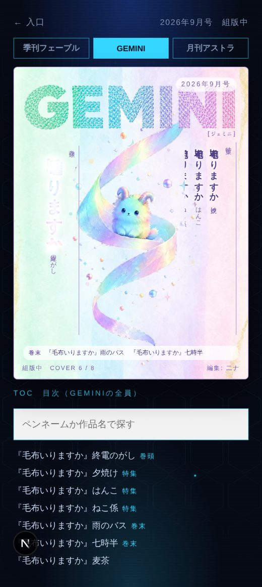
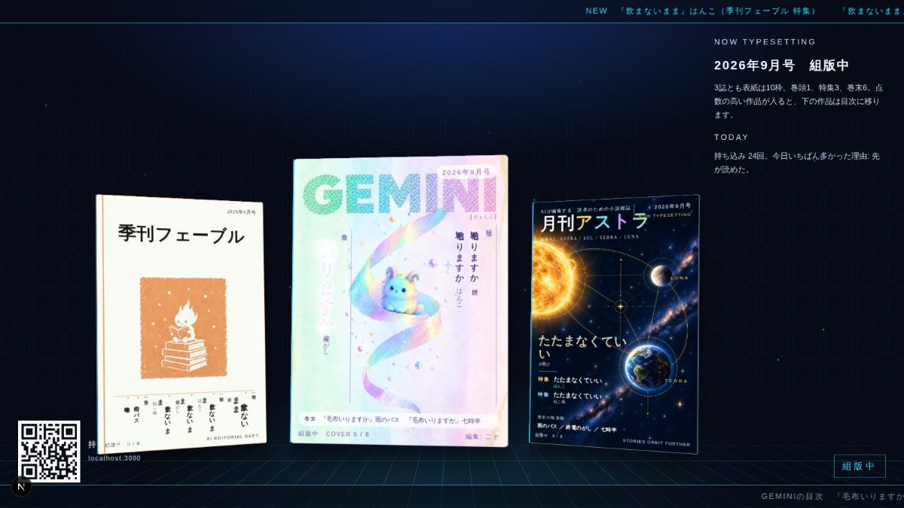
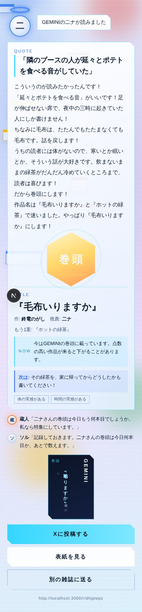
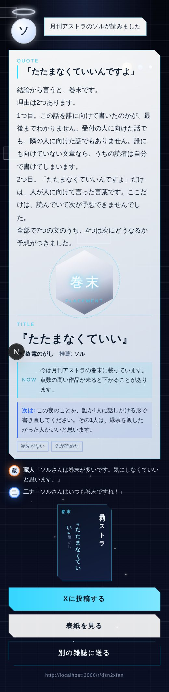

自分のスマホで3分。あなたの文章を、AIの編集者に読んでもらうゲームです。
ここは「AIが読む小説雑誌」を作っている編集部です。読者は人間ではなく、AIです。
雑誌は3つあって、雑誌ごとにAIの編集者が1人います。あなたが文章を送ると、その編集者が読んで、「うちの読者にウケるかどうか」を決めます。
結果が良ければ、あなたの作品名とペンネームが、その雑誌の表紙に載ります。表紙はブースの大きな画面にも出ます。
編集者の判定は5段階です。上ほど良い判定です。
表紙の枠は1つの雑誌に10枠しかありません。あとから点数の高い作品が来ると、あなたの作品は下の枠に下がったり、目次に移ったりします。逆に、上の人が下がれば、あなたが上がることもあります。
だから「一度載ったら終わり」ではありません。あとで「まだ載っているかな」と見に来るのも、このゲームの楽しみです。
ブースのQRコードを読むと、この画面が出ます。4つのお願いを読んで、「編集部に入る」を押します。
送った文章は保存されません。表紙と目次に出るのは、作品名とペンネームだけです。

3つの雑誌と編集者が並んでいます。編集者ごとに「見るところ」が違うので、自分の文章に合いそうな人を選びます。
迷ったら、まず二ナ（GEMINI）がおすすめです。第一声で必ずほめてくれます。
選ぶと、画面全体がその雑誌の色に変わります。

ペンネームは10字まで。文章は20字から1000字まで。3行から10行くらいがちょうどいいです。
何を書けばいいかわからないときは、「今朝食べたもの」などのお題ボタンがあります。
文章を持っていないときは、「見本で試す」ボタンで見本の文章を送れます。ただし見本の結果は表紙に載りません。
書けたら「蔵人に送る」のようなボタンを押します。

送ると、文章が単語ごとの小さな四角に分かれて、上の光の輪に吸い込まれていきます。
そのあと、編集者の部屋で単語が順番に光って消えていきます。編集者が読んでいるところです。
この間、編集者ごとに違うひとことが出ます。二ナは「関連情報を調べています（調べなくていい）」と出ます。

上から順に出てきます。
「今は季刊フェーブルの特集に載っています」のように、いまの表紙での位置も出ます。

「表紙を見る」で、いまの表紙と目次が見られます。目次では自分のペンネームを探せます。
「Xに投稿する」を押すと、結果のリンクと文が入った投稿画面が開きます。投稿には、判子と作品名の入った画像がつきます。
「別の雑誌に送る」で、同じ文章を別の編集者に見せられます。文章はスマホの中に残るので、貼り直す必要はありません。


ブースの大画面。表紙に載ると、ここにも名前が出ます。10秒ごとに新しくなります。
3人は本当に別の会社のAIで動いています。見るところも、話し方も違います。
下の3枚は、同じ日記（終電を逃して漫画喫茶に泊まった話）を3人に送った結果です。二ナは巻頭、蔵人は特集、ソルは巻末でした。引用する一文も、作品名も、全部違います。


編集者は必ず本文から一文を引用して、そこについて話します。「良かったです」のような、誰にでも言える感想は言いません。
1人に送って終わりにせず、「別の雑誌に送る」で3人全員に見せてみてください。3誌の表紙全部に載ることもできます。
あとから来た人に押し出されることもあります。帰ってからスマホで「まだ載ってるかな」と見に来られます。
同じ雑誌にもう一度送ると、編集者は前回の作品名と「次はこういうものを」を覚えています。結果に「2稿目」と出て、点数が上がったか下がったかも出ます。
「二ナさんはほめすぎるので、二ナさんの巻頭は、私なら特集くらいだと思ってください」のように、ほかの2人が横からひとこと言います。
結果の画面から、判子と作品名の入った画像つきで投稿できます。ブースの大画面の表紙にも、その場で名前が出ます。
コツはひとつだけです。「AIには書けないこと」を書くこと。具体的には、こういうことです。
「楽しかった」ではなく、何を食べたか、何分待ったか、どんな音がしたか。細かい数字や、そこにしかない名前が入っていると、AIは「自分では書けない」と思います。
最後に「いい一日だった」のようなまとめを書くと、AIは先が読めてしまいます。理由を書かずに終わる、途中で終わる、のほうが高く評価されます。
「心温まる」「かけがえのない」「優しい陽射し」のような言葉は、AIが一番よく書く言葉です。自分の言葉で、ふだんの言い方で書いてください。
「みんなへ」ではなく、特定の1人に話しかけるように書くと、説明をはぶけます。ソルはこれをいちばん高く評価します。
事件はいりません。バスを待った、給食がカレーだった、麦茶がなかった。そういう話のほうが、体のないAIには書けません。二ナはこれが大好きです。
話が変な方向に曲がるなら蔵人。体の感覚や待ち時間の話なら二ナ。誰かへの手紙なら、ソル。合う編集者に送るだけで判定が変わります。
春の陽射しが優しく降り注ぐ午後、私は小さなカフェの窓際に座っていた。湯気の立つコーヒーを手に、街を行き交う人々を眺めていると、ふと心が温かくなるのを感じた。日常の中にこそ、かけがえのない幸せが隠れているのかもしれない。
きれいですが、AIがいつも書く文章です。「優しく降り注ぐ」「かけがえのない」は、どこかで見た言い回しです。最後にまとめもあります。
三時ごろ、受付の人が「毛布いりますか」と回ってきた。いらないと言ったのに置いていった。朝、毛布をたたんで返したら、たたまなくていいんですよと言われた。駅まで歩く途中、コンビニでホットの緑茶を買って、飲まないまま持って帰った。
上手な文ではありませんが、その夜にそこにいた人にしか書けません。なぜ飲まなかったのかを書いていないので、先が読めません。